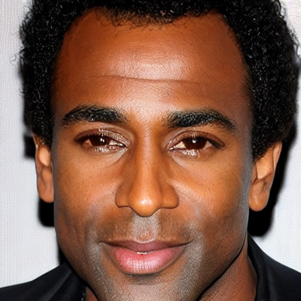
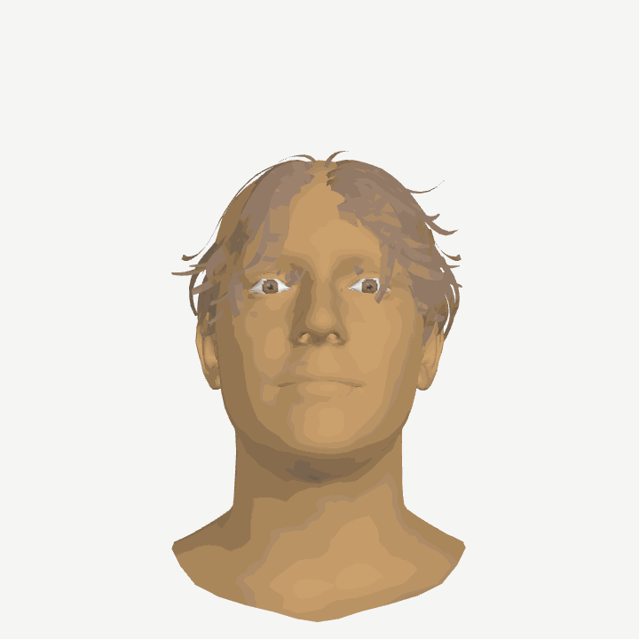
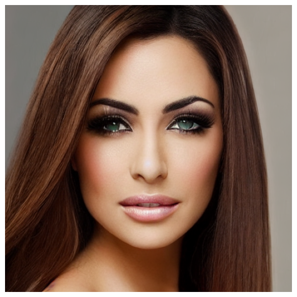
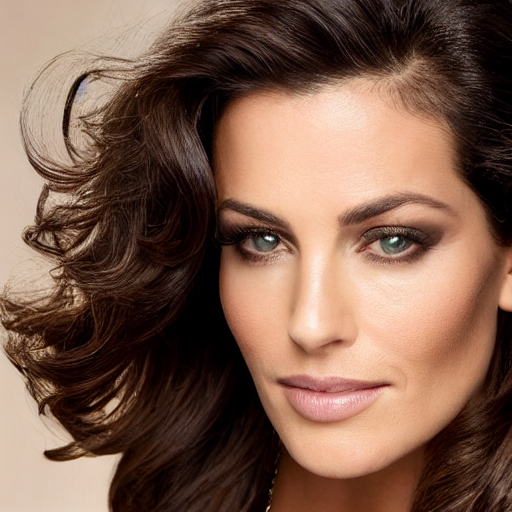

An end-to-end pipeline that translates raw SNP genotypes into a photorealistic 2D portrait and a fully fitted 3D FLAME face model — bridging genomic data and spatial facial structure in a single automated pipeline.
This project builds an end-to-end pipeline that takes raw genetic sequencing data and produces two complementary outputs: a photorealistic 2D portrait and a geometrically fitted 3D FLAME face model. Starting from simulated SNP genotypes across 50+ genes, the system predicts 29 facial phenotype traits, generates a Stable Diffusion portrait, and optimises a parametric 3D head to match the predicted measurements.
Phenotype measurements drive FLAME shape parameter optimisation, producing a geometrically accurate 3D head with predicted skin, hair, and eye colours applied.
SNP database covering genes linked to eye colour, face shape, skin tone, hair texture, and more.
CelebA-fine-tuned LoRA model generates photorealistic portraits from phenotype-derived prompts.
Weighted genotype scoring predicts a rich facial feature vector from raw sequencing data.
Each stage is modular and independently testable. The pipeline runs end-to-end with a single command, producing both a 2D portrait and a 3D FLAME face model from the same DNA input.
Synthetic SNP genotypes are generated for a population sample across 50+ trait-linked loci, respecting realistic allele frequency distributions.
dataset_builder.pyRaw sequencing reads are synthesised from the simulated genomes with configurable coverage, read length, and per-base sequencing error rates.
simulate_targeted_reads.pyAllele counts from reads are used to call SNP genotypes. Accuracy is tracked against ground-truth genotypes and results are exported as VCF files.
call_genotypes_from_reads.pyWeighted SNP scoring maps genotypes to a 29-trait phenotype vector covering eye colour, facial geometry, skin features, hair properties, and ear morphology.
dataset_builder.py → PhenotypePredictorPhenotype vectors are converted to rich text prompts and fed to Stable Diffusion v1.5 with a CelebA LoRA fine-tune, producing photorealistic synthetic portraits.
generate_face_images.pyPredicted facial measurements drive iterative FLAME shape parameter optimisation. The resulting 3D mesh is rendered with appearance parameters — skin tone, hair colour, and eye colour — applied as material properties via pyrender.
generate_from_parameters.py · appearance_scene.pyThe pipeline was run on a synthetic cohort of 10 samples across 52 SNP loci, achieving perfect genotype calling accuracy and producing both a photorealistic 2D portrait and a parametric 3D FLAME face model for each individual.
Each sample produces two outputs from the same phenotype vector: a Stable Diffusion portrait (left) and a FLAME-based 3D head model coloured with predicted appearance parameters (right).




Predicted traits for SYNTH_000052 — each trait derived from weighted SNP scoring across 52 loci.
Each SNP contributes a weighted score to one or more phenotype axes. Homozygous alternate alleles receive full weight; heterozygous calls receive half weight. Aggregate scores are then normalised and mapped to discrete or continuous phenotype categories using thresholds tuned to population-level expectations.
The read simulator introduces substitution errors at configurable per-base error rates, and models realistic coverage distributions across targeted loci. The genotype caller then reconstructs alleles from read pileups, reporting heterozygous calls when allele balance sits in a configurable range.
A Low-Rank Adaptation (LoRA) layer is applied to Stable Diffusion v1.5 and fine-tuned on the CelebA dataset. This steers generation toward realistic facial structure while retaining the model's broad generalisation ability, allowing phenotype-derived prompts to produce consistent, high-quality portraits.
Hair phenotypes (colour, texture, thickness, hairline shape) are mapped to material parameters — melanin concentration, redness, density multipliers — for use in 3D rendering pipelines. A template catalogue covers 18 distinct hair-asset combinations.
A structured prompt converter translates the 29-trait phenotype vector into detailed positive and negative diffusion prompts. Positive prompts encode specific trait descriptions; negative prompts suppress common artefacts and unrealistic features to improve output fidelity.
Because real-world DNA-to-face paired datasets are scarce and privacy-sensitive, the pipeline generates fully synthetic paired data — genotypes, phenotypes, and portrait images — at scale, enabling downstream model training without privacy constraints.
2210765051
2210356185
2210765033